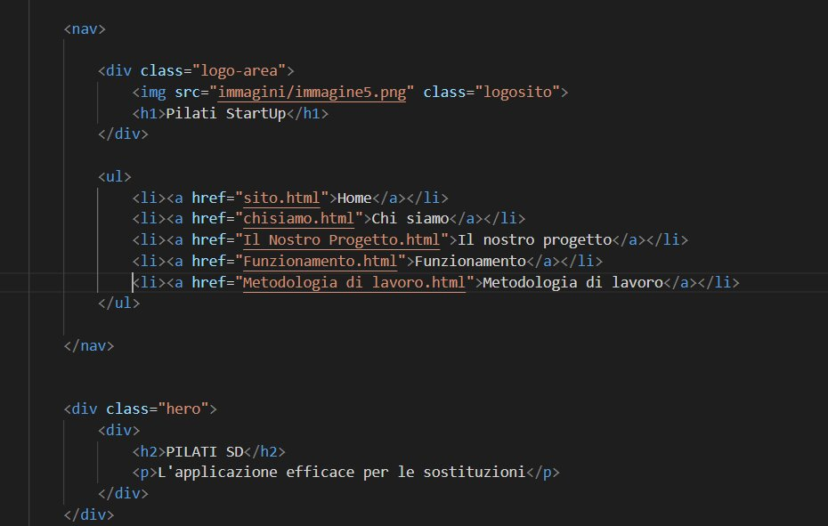
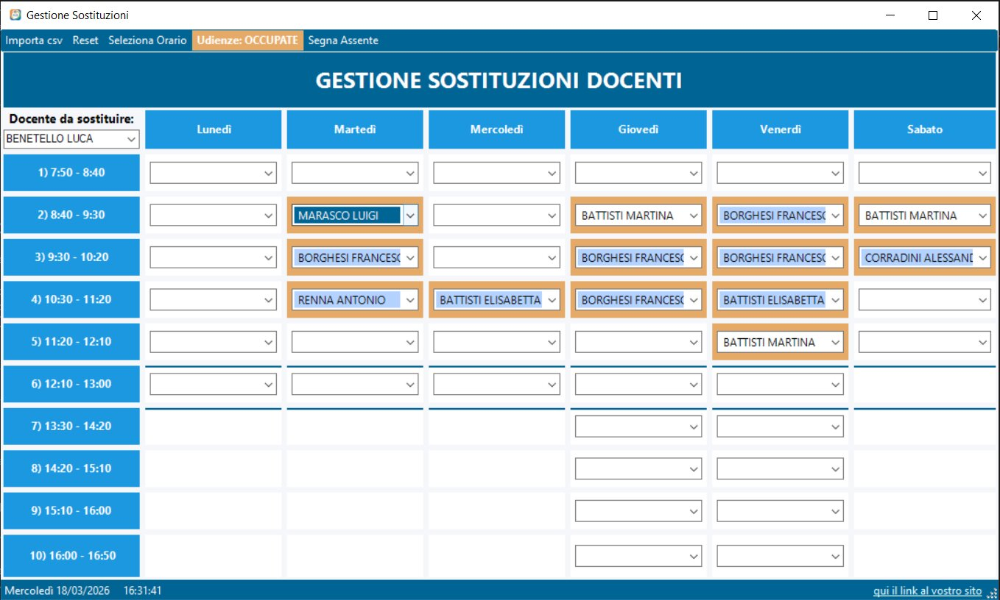
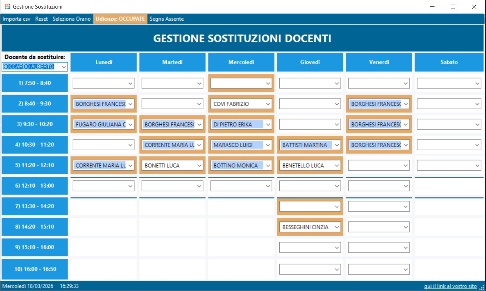

Come abbiamo lavorato per realizzare l'app
La Scrum è una metodologia di lavoro agile usata soprattutto nello sviluppo di software per organizzare il lavoro in piccoli passi e migliorare continuamente il progetto.

Abbiamo creato un sito che spiega i funzionamenti principali dell'applicazione per realizzarlo.

Viene data la priorità ai docenti che insegnano nella classe dove deve essere effettuata la sostituzione.

Scegliendo il docente da sostituire, l'app sceglie in autonomia il docente più adatto alla sostituzione.